- Módulo: Sistemas Operativos
- Título del trabajo Instalación desatendida
- Componentes del grupo: Silvano Pérez Yanes y Eliot Farrais García
- Curso Académico: 2013/2014
- Fecha de entrega: 15 de Mayo de 2014
En la práctica de hoy, se realizara la instalación de un sistema operativo OpenSUSE, de manera desatendida, utilizando la página web:"SUSEstudio", que nos permitira crear una maquina virtual totalmente preparada. Este sistema operativo esta orientado para ususarios de los cursos ASIR, con todo lo básico.
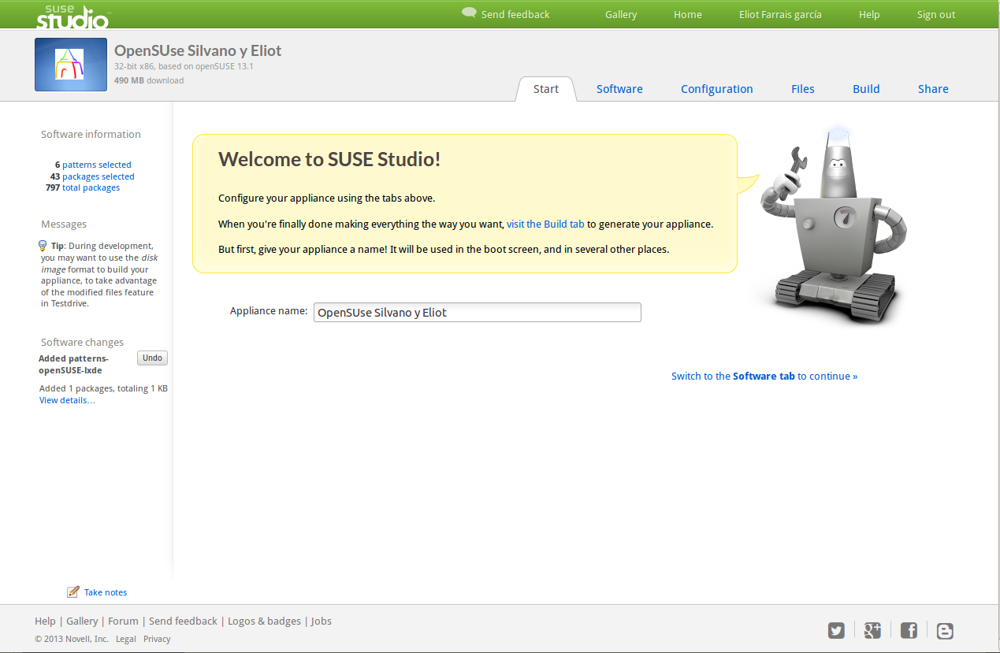Aquí selecionaremos los paquetes a instalar
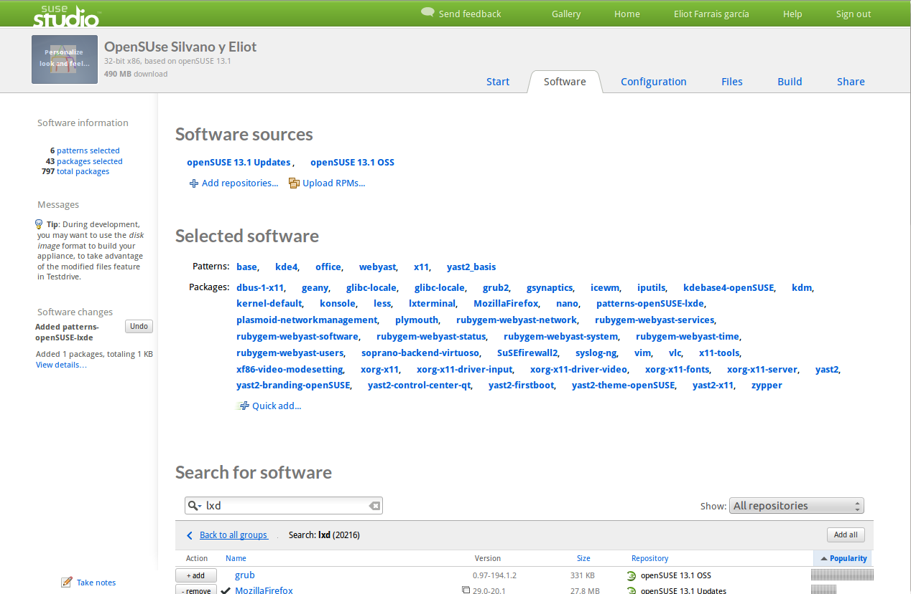Configuración general del S.O. de OpenSUSE
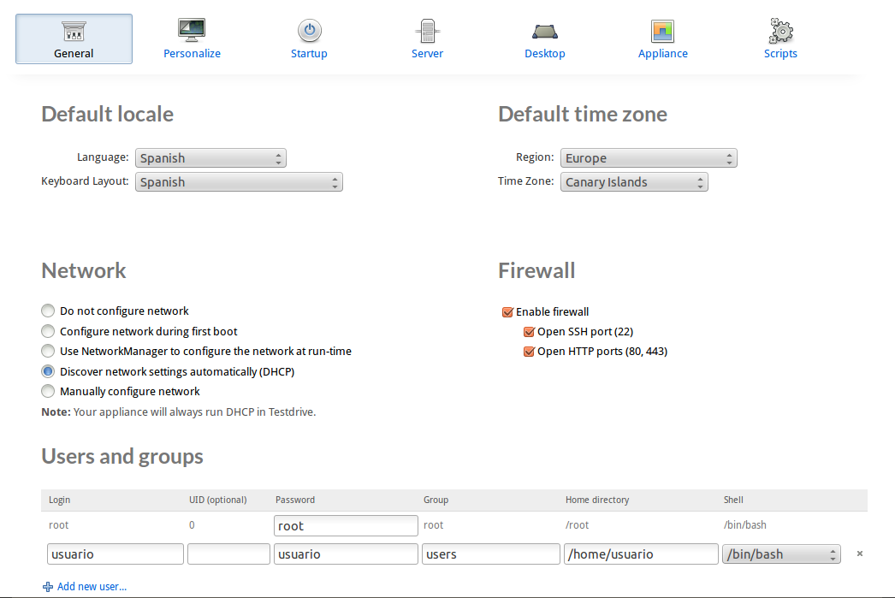Cambiamos el logo y la apariencia de la instalación
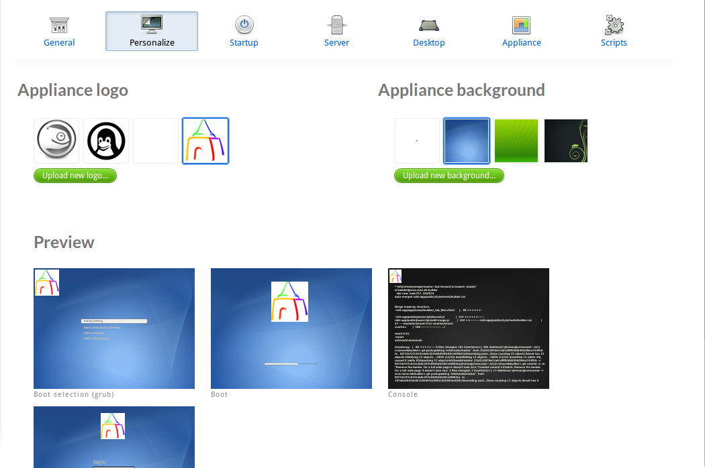Elejimos como queremos arrancar. Nosotros elejimos de manera gráfica
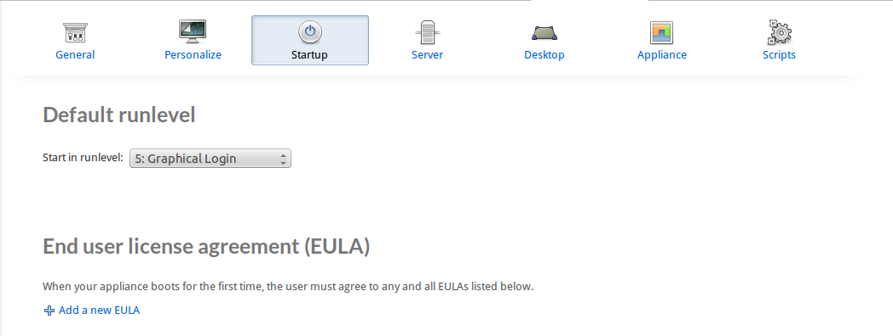Elejimos el usuario con el que queremos iniciar automáticamente el sistema
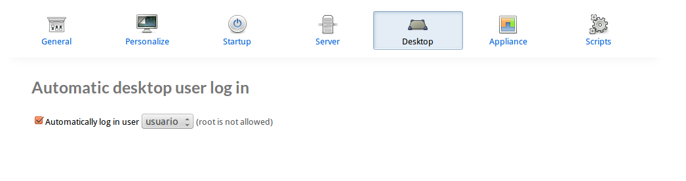Pasamos a la instalación de la maquina virtual. La instalación del se realizara con CDlive, que se nos ha construido en la página de openSUSE.
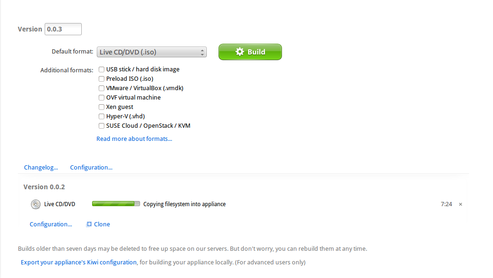Iniciamos la instalación, y vemos que se nos ha cambiado el logo
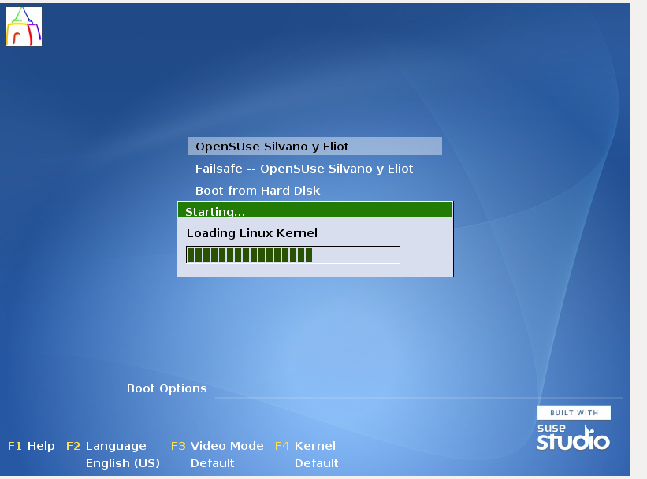Una vez terminado vemos que el S.O. tiene los programas instalados
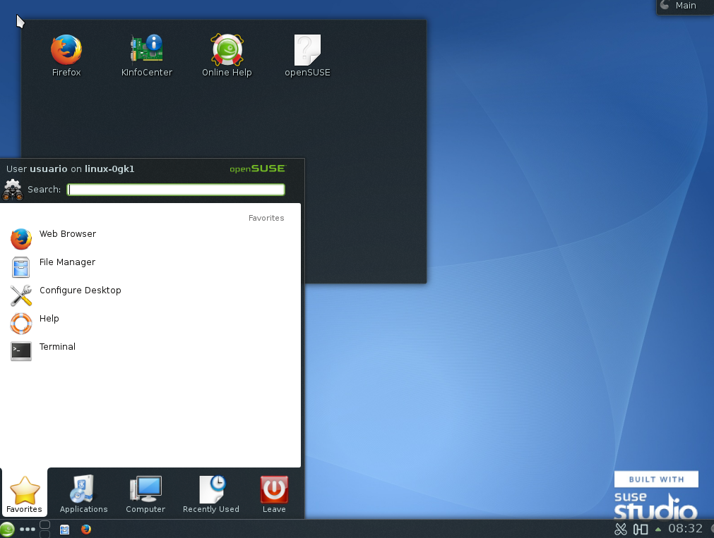En este caso, el sistema operativo será con el escritorio de LXDE en el S.O. OpenSUSE, un escritorio más ligero y rápido.
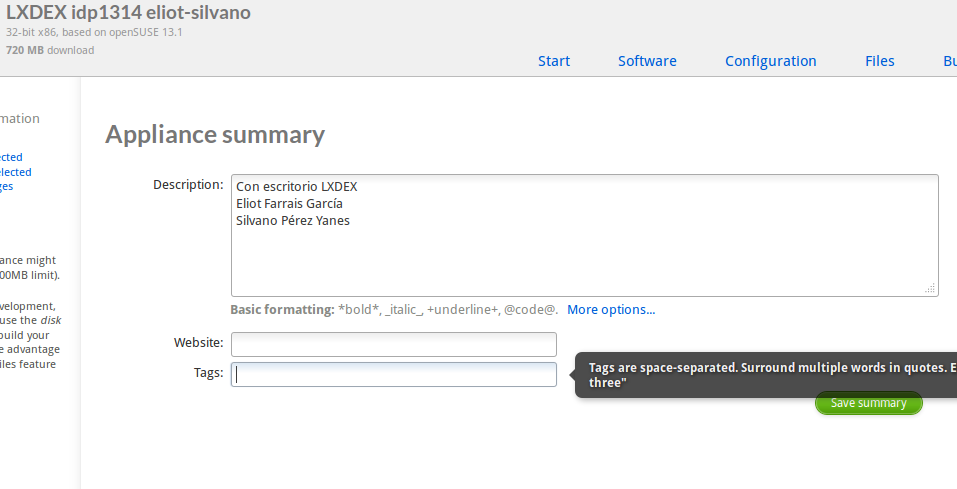Probamos el funcionamiento del sistema operativo dentro de la página web, con la herramienta testdrive.
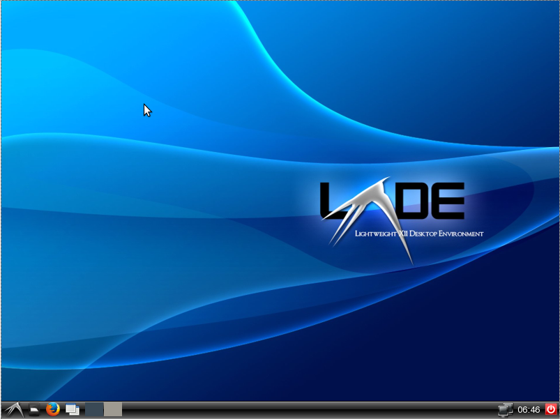Esta práctica sirve para poder instalar, un sistema operativo de manera automatica, en nuestro caso utilizando la herramienta SUSEstudio, que provee al usuario de sistemas operativos OpenSUSE. En este apartado apareceran las Url de los sistemas operativos creados en SUSEstudio. Enlace a las máquinas